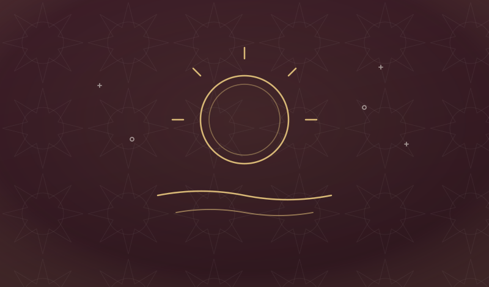
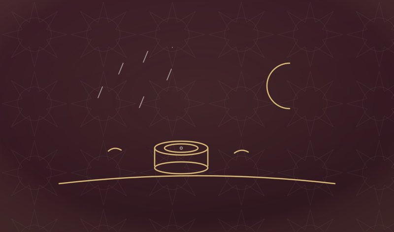
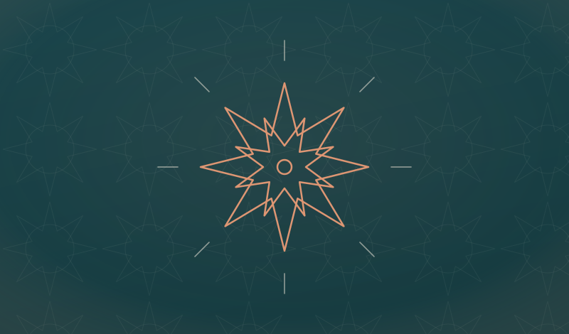
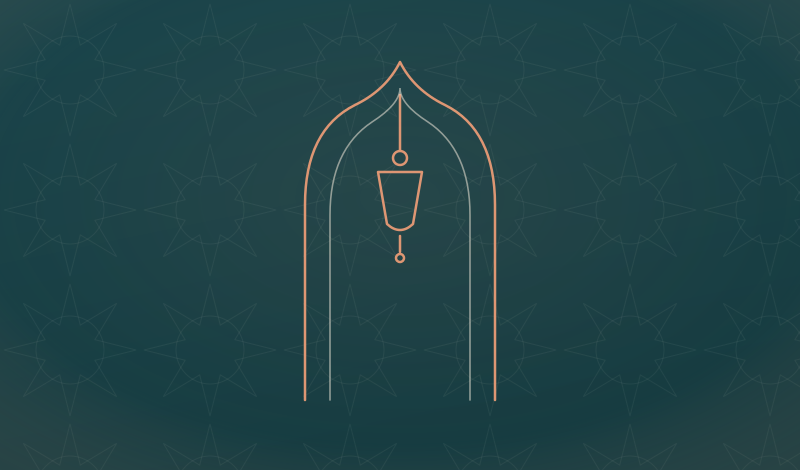
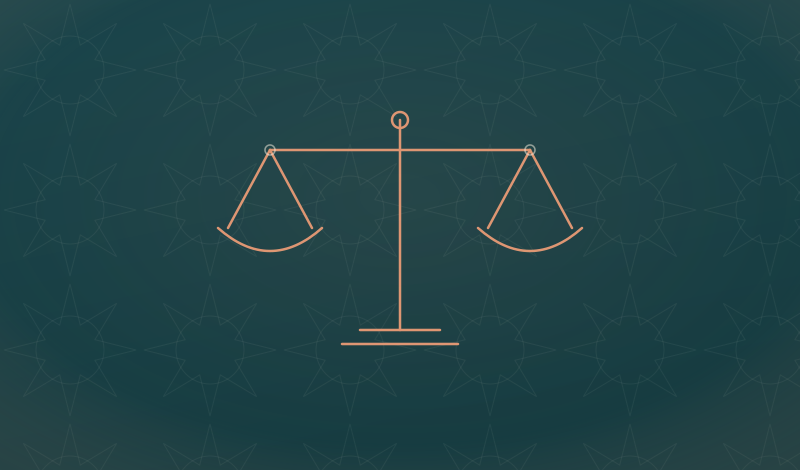
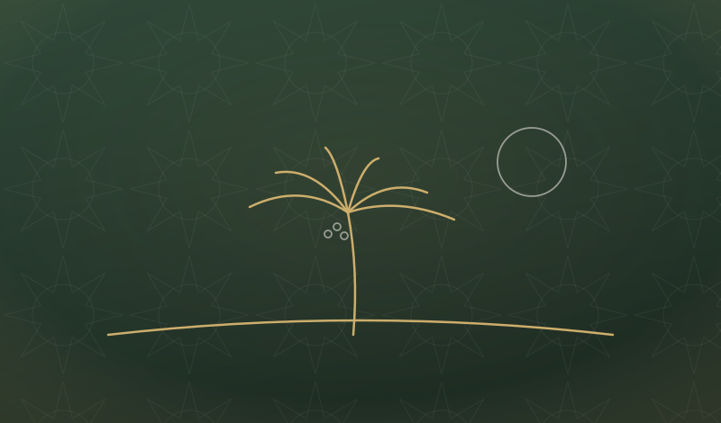
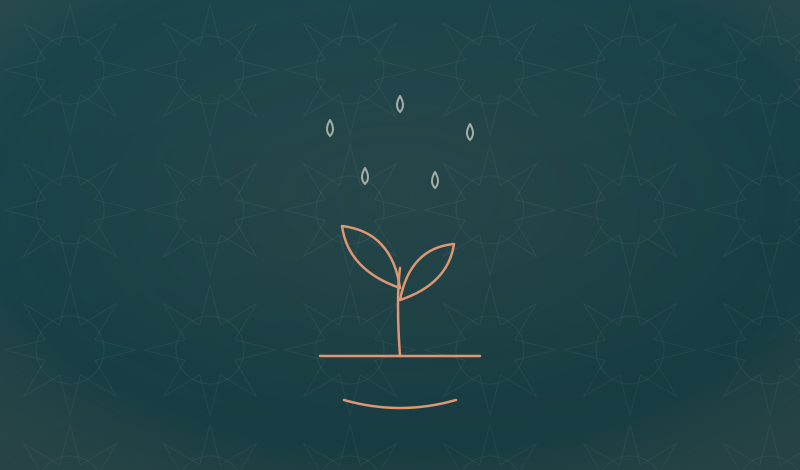
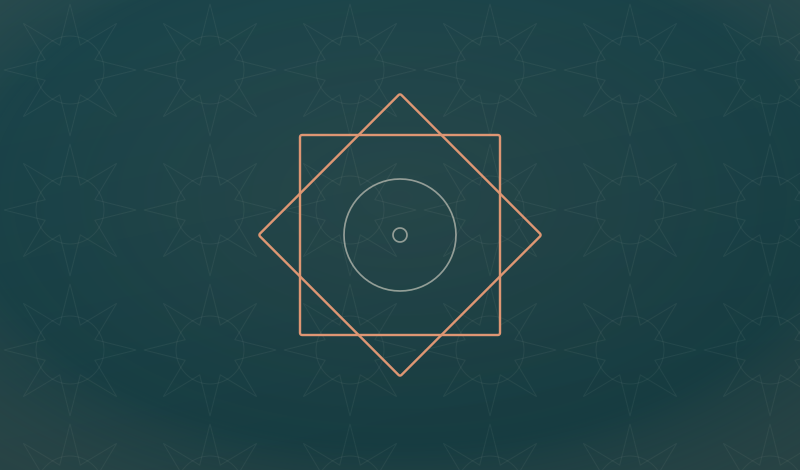
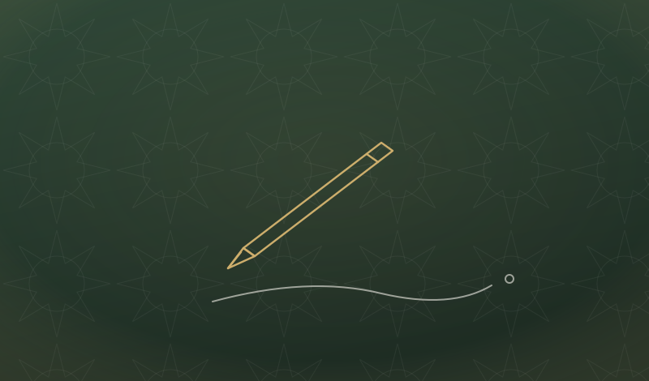
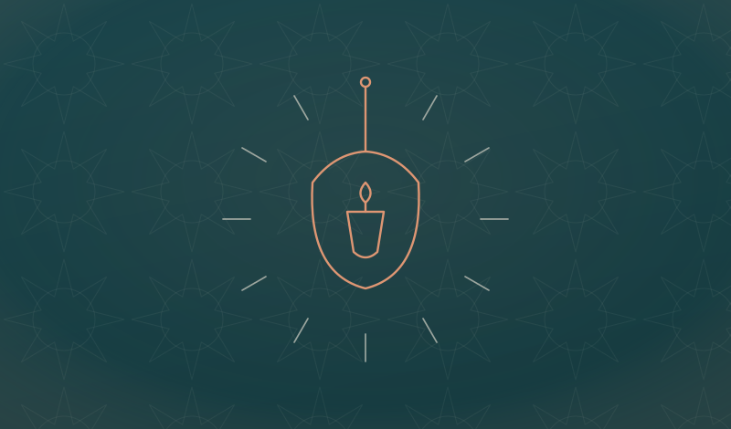

The Journal
Reflections & reminders
Writings on faith, worship, character, and the questions of everyday life — rooted in revelation, written for real hearts.
Writings on faith, worship, character, and the questions of everyday life — rooted in revelation, written for real hearts.

His appearance ﷺ in the words of those who saw him — the agreed descriptions, the Seal of Prophethood, and the fuller portraits. From the Ilm library.
Read the study →
The Battle of Badr studied from the classical sources — the consultation, the wells, the victory, and the mercy shown to the captives. From the Ilm library.
Read the study →
Beginning with tawḥīd — why knowing Allah comes before everything else.
Read article →
Prophetic steps to bring presence of heart back into the prayer.
Read article →
How the Prophet ﷺ tied beautiful manners to nearness to him.
Read article →The chapter we recite seventeen times a day — and rarely pause to understand.
Read article →
What the hardest day of the Prophet's ﷺ life teaches us about patience.
Read article →
How a thankful heart reshapes the way we see every blessing and trial.
Read article →
Understanding qadar as a source of peace rather than confusion.
Read article →
Small words, lasting consequences — and the path to speech that pleases Allah.
Read article →
Reflecting on Āyat an-Nūr and what it reveals about the heart.
Read article →No articles in this topic yet — new writings are added regularly, in shā' Allah.